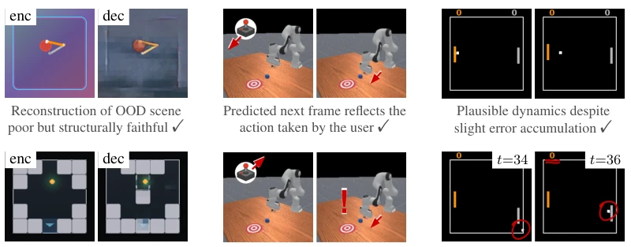
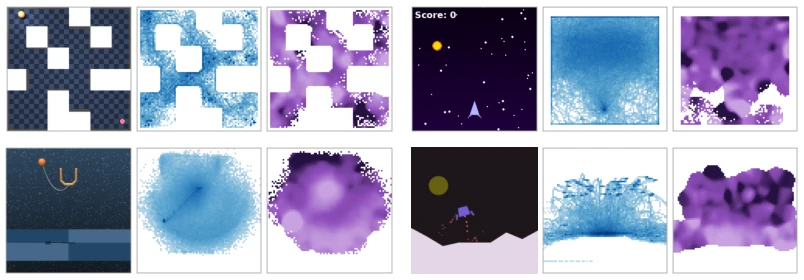
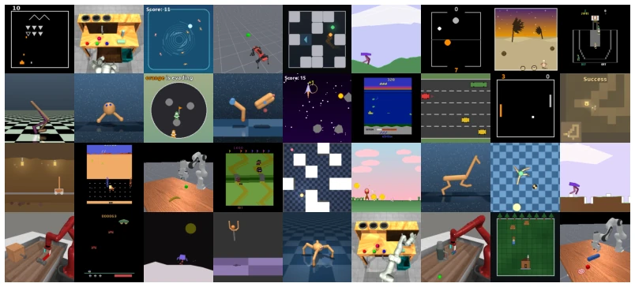
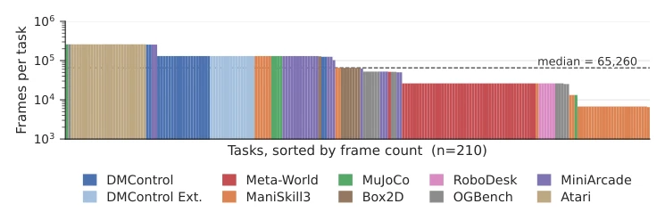
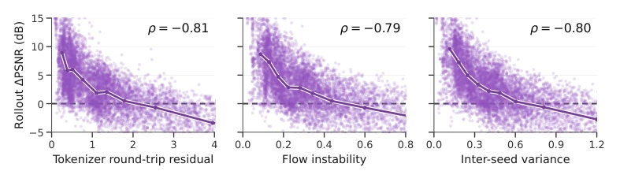
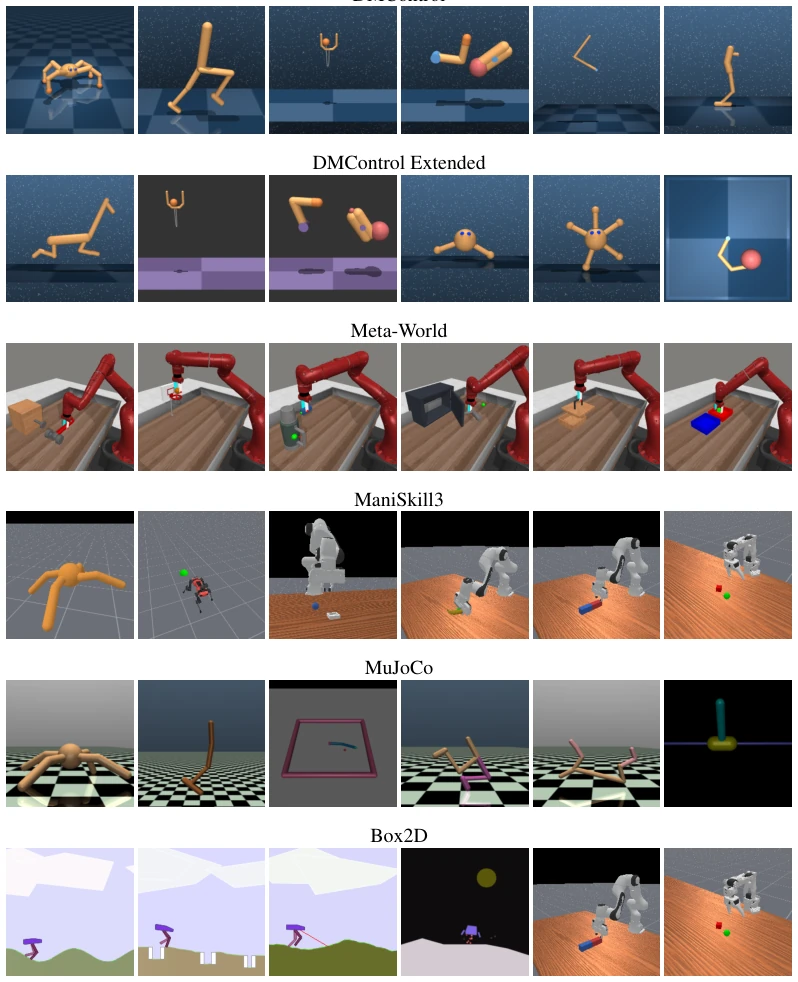
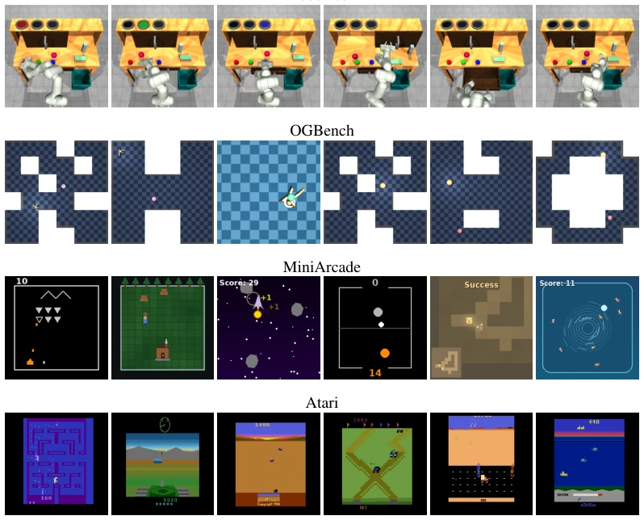
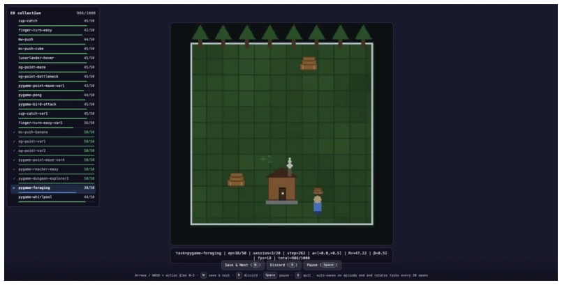
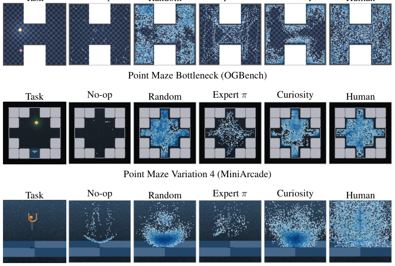

This paper brings the \"hallucination\" problem in world models back from metaphysics to data engineering. The author's core viewpoint is sharp: hallucinations stem not from model architecture deficiencies, but from insufficient data coverage. They developed the MMBench2 dataset, comprising 210 tasks and 427 hours of video, effectively supplementing the field. However, the 350M parameter model appears somewhat \"modest\" amidst the current wave of models with billions of parameters. Although they demonstrated that small models can resolve hallucinations through data strategies, whether this conclusion holds in the face of real-world robot noise and large-scale simulation remains uncertain. Furthermore, while classifying hallucinations into three types is interesting, it remains questionable whether the detection signals truly generalize to complex physical environments. Overall, this is a pragmatic work emphasizing \"data is king,\" but one should not expect it to directly solve all hallucinations in end-to-end embodied intelligence.
研究动机Motivation
现代生成式世界模型虽然能渲染逼真的未来，但经常产生幻觉：画面流畅却偏离真实动态 (Janner et al., 2019)。这种幻觉在下游规划中会导致决策错误，后果比文本生成更严重。现有观点常认为这是架构问题，需更大模型 (Hoffmann et al., 2022)。但作者指出，幻觉集中在状态 - 动作空间的低覆盖区域。现有基准缺乏对训练语料的完全控制、行为多样数据及实时环境交互，导致难以诊断。因此，需要 MMBench2 这样的资源来探究幻觉根源，并验证数据覆盖是否为核心杠杆。
Modern generative world models can render realistic futures but frequently produce hallucinations: smooth visuals that deviate from true dynamics (Janner et al., 2019). Such hallucinations lead to decision errors in downstream planning, with consequences more severe than in text generation. Existing perspectives often attribute this to architecture issues, requiring larger models (Hoffmann et al., 2022). However, the authors point out that hallucinations concentrate in low-coverage regions of the state-action space. Existing benchmarks lack complete control over training data, diverse behavioral data, and real-time environment interaction, making diagnosis difficult. Therefore, resources like MMBench2 are needed to investigate the root causes of hallucinations and verify whether data coverage serves as the core lever.

Figure 1. Hallucination. We categorize hallucinations as three distinct failure modes: perceptual, action marginalization, and scene divergence, and develop methods for detection and mitigation.
The overall approach adopts the Dreamer 4 architecture, comprising a Video Tokenizer and an action-conditioned dynamics model. First, a 350M parameter model is trained. Regarding hallucinations, three detection signals are proposed: 1) Tokenizer round-trip residual, detecting perceptual hallucinations (reconstruction bias); 2) Flow instability, detecting action insensitivity (dynamics model insensitive to actions); 3) Inter-seed variance, detecting scene divergence (multi-step accumulated error). These signals require no additional training. Mitigation strategies are divided into two steps: during training, coverage-aware sampling is used to resample low-coverage regions; during online fine-tuning, prediction signals are used as curiosity rewards (Curiosity rewards) to collect data. Ultimately, adaptation to new environments is achieved using 50 trajectories. Specifically, the Tokenizer compresses images into latent codes, the dynamics model predicts the next latent code based on actions, and the Decoder reconstructs the images. Detectors monitor latent code reconstruction, flow matching stability, and multi-step prediction variance respectively. The data collection strategy utilizes the predictor as a reward to guide the robot to explore areas of model uncertainty, thereby filling coverage gaps.

Figure 4. Data coverage and hallucinations. From left to right: sample frame, state density of key agent/object position, and tokenizer round-trip residual ur of the world model. We use dark blue and dark purple to denote high state density and high ur, respectively. Hallucinations concentrate in low-coverage regions, especially near the periphery of the visited state distribution.
实验Experiments
使用 MMBench2 数据集（210 任务，427 小时）。评估指标包括重建 PSNR、Rollout PSNR gain、Action shuffle ratio 及下游任务性能。实验发现三个预测指标与 rollout 误差高度相关 (ρ ≈ 0.80)。Coverage-aware training 能同时降低三类幻觉。在 10 个未见任务上，仅用 50 条基于 curiosity 的轨迹微调，性能接近专家/人类数据 (0.325 vs 0.362)。对比显示，在未见任务上，预训练模型零样本有一定能力，但微调更有效。消融实验表明，仅微调动态模型效果不如同时微调 Tokenizer。此外，对比了不同数据源，人类数据和专家策略表现最佳，但好奇心探索能以低成本达到接近效果。
The experiments utilize the MMBench2 dataset (210 tasks, 427 hours). Evaluation metrics include reconstruction PSNR, Rollout PSNR gain, Action shuffle ratio, and downstream task performance. Experiments reveal that the three prediction metrics are highly correlated with rollout error (ρ ≈ 0.80). Coverage-aware training can simultaneously reduce all three types of hallucinations. On 10 unseen tasks, fine-tuning with only 50 curiosity-based trajectories yields performance comparable to expert/human data (0.325 vs 0.362). Comparisons show that on unseen tasks, the pre-trained model has some zero-shot capability, but fine-tuning is more effective. Ablation experiments indicate that fine-tuning only the dynamics model yields inferior results compared to fine-tuning the Tokenizer simultaneously. Additionally, different data sources were compared; human data and expert strategies performed best, but curiosity exploration achieved comparable results at a low cost.

Figure 2. MMBench2 tasks. A sample of 36 of the 210 tasks in MMBench2, illustrating the visual and morphological diversity of the corpus. All observations are 224×224 RGB frames.

Figure 3. Dataset composition. Per-task frame counts across the 210 tasks in our training corpus (20M frames), sorted in descending order and colored by domain. The distribution is heavy-tailed: the top 20 tasks account for 26% of all frames (dominated by Atari) while the bottom 20 contribute only 0.7% (short-horizon manipulation tasks). The dashed line marks the per-task median (65k).

Figure 5. Our three hallucination predictors track the same realized rollout error. Each point corresponds to one of 9k held-out 24-frame sequences from any of 200 training tasks, computed using our pretrained base model; the purple curve shows the median for each of 8 bins.

Figure 7. Visualization of task domains (1 of 2). We show sample tasks from each of the 10 task domains that we consider.
其他图片Other Figures

Figure 8. Visualization of task domains (2 of 2). We show sample tasks from each of the 10 task domains that we consider.

Figure 9. Web interface for human play data collection. We develop a simple web interface for data collection. A human user interacts with the environment using the keyboard, and interaction data is saved and later used for world model training. We collect a total of 1,400 trajectories using this interface.

Figure 10. Data coverage by collection method. We show state densities for five online data col- lection policies (no-op, random, expert, curiosity, and human) across three additional tasks besides those in Figure 6.